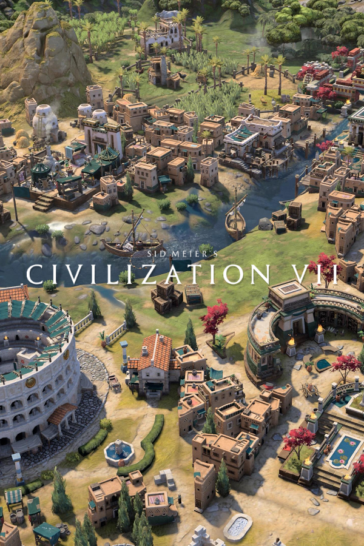

Civilization VII
Every archived year-end list appearance, including placement and points earned.
About the Game
DELUXE AND FOUNDERS EDITIONS Sid Meier's Civilization® VII Founders EditionExpand the strategic horizons of your empire and enjoy more options for your reign with Sid Meier's Civilization® VII Founders Edition! This digital-only edition is only available until February 28, 2025—get it now before it's history. Founders Edition includes: • Full base game• Tecumseh and Shawnee Pack • Crossroads of the World Collection, with post-launch content featuring 2 new leaders, 4 new civilizations, 4 new Natural Wonders, a special cosmetic bonus, and more• Right to Rule Collection, with post-launch content featuring 2 new leaders, 4 new civilizations, 4 new wonders, a special cosmetic bonus, and more!*• Deluxe Content Pack, which includes:- 2 leader personas- 4 profile customizations- 1 alternate scout skin• Founders Content Pack, which includes:- 2 leader personas- 4 profile customizations- 1 fog of war tile set - 1 Founders palace skin Sid Meier's Civilization® VII Deluxe EditionExpand the strategic horizons of your empire and enjoy more options for your reign with Sid Meier's Civilization® VII Deluxe Edition! Deluxe Edition includes: • Full base game• Tecumseh and Shawnee Pack• Crossroads of the World Collection, with post-launch content featuring 2 new leaders, 4 new civilizations, 4 new Natural Wonders, a special cosmetic bonus, and more!• Deluxe Content Pack, which includes:- 2 leader personas- 4 profile customizations - 1 alternate scout skin Link your 2K Account to play as NapoleonGet Napoleon and his Emperor Persona in Sid Meier's Civilization VII*By setting up a free 2K Account, you're entitled to add Napoleon Bonaparte with his Emperor Persona to your selection of leaders in Civilization VII at launch!To earn this reward, sign-up or log in via the 2K Account portal, link the account and platform you'll use to play Civilization VII via the "Connections" tab underneath "Account Overview," seen on the left side of the screen. Once Civilization VII is available, you'll simply log into your 2K Account in-game to access Napoleon Bonaparte with his Emperor Persona.Like all leader Personas, Napoleon's Emperor Persona has a unique outfit and background, new gameplay bonuses, and an alternative agenda when played by the AI. Napoleon's Emperor Persona specializes in commerce and military might, with a new Unique Ability: Empereur des Français, which is a Unique Diplomatic Action that reduces the Trade Route capacity for a target civilization and causes massive Grievances. He also gets bonus Gold per Age for every leader he's Unfriendly or Hostile with.*Requires an internet connection, and a 2K Account linked to the platform account used to play Sid Meier's Civilization VII. 2K Accounts are free. One per 2K Account. Reward will be automatically delivered in-game. Void where prohibited. Terms apply. About the GameThe award-winning strategy game franchise returns with a revolutionary new chapter. Sid Meier's Civilization® VII empowers you to build the greatest empire the world has ever known! In Civilization VII, your strategic decisions shape the unique cultural lineage of your evolving empire. Rule as one of many legendary leaders from throughout history and steer the course of your story by choosing a new civilization to represent your empire in each Age of human advancement. Construct cities and architectural wonders to expand your territory, improve your civilization with technological breakthroughs, and conquer or cooperate with rival civilizations as you explore the far reaches of the unknown world. Pursue prosperity in an immersive solo experience or play with others in online multiplayer.** Whether you choose to follow a path rooted in history or reimagine possibilities to chart your own way forward, build something you believe in and create a legacy that echoes through the Ages in Civilization VII. BUILD AN EMPIRE THAT STANDS THE TEST OF TIME Lead your empire through distinct Ages of human history. Each Age is its own rich, nuanced journey, with unique playable civilizations, available resources, explorable land, and even entire gameplay systems, creating a deep, historically immersive strategy experience. Strive to accomplish significant scientific, cultural, militaristic, and economic milestones within each Age to unlock impactful advantages in the next! EVOLVE YOUR EMPIRE AS EACH NEW AGE DAWNS To build a legacy that truly stands the test of time, you must adapt. Forge your own path through history as you reshape your empire at the start of each Age, selecting from a pool of new Age-relevant civilization options determined by your prior gameplay accomplishments. Evolving your empire unlocks fresh gameplay bonuses and unique units, so your current civilization is always at the height of its power. PLAY AS VISIONARY LEADERS OF PROGRESS Embody an illustrious leader with one of Civilization's most diverse rosters yet, from traditional heads of state known for their militaristic might or political prowess, to visionary leaders who made everlasting impacts in philosophy, science, human rights, and more! Each leader possesses a unique ability and can further be improved with customizable attributes earned through gameplay, empowering you to reinforce or pivot your strategy from one Age into the next. For the first time in franchise history, you can choose your leader separately from your civilization, giving you the freedom to create all-new strategies by mixing and matching gameplay bonuses. EXPLORE A WORLD BROUGHT TO LIFE LIKE NEVER BEFORE Make your mark on a gorgeously detailed world! Your empire comes to life with a vast, diverse range of cultural styles, represented across building architecture and unit design. Face-to-face interactions with other historic leaders immerse you in every act of diplomacy and declaration of war. As your territory expands and your cities continue to develop, lavishly rendered vistas of your empire seamlessly connect to create a vibrant metropolis. TEST YOUR STRATEGIC METTLE IN MULTIPLAYER Compete against other players online and prove your prowess as a great leader.** Multiplayer matches can be epic multi-Age campaigns, or take place in a single Age so you can enjoy an entire game in a single session. Cross-play is supported between PC and consoles, so you can play together with friends wherever they are. AN ENJOYABLE STRATEGY EXPERIENCE FOR ALL With more than 30 years of franchise legacy to draw from, Civilization VII features a vast wealth of gameplay improvements that will thrill series veterans and newcomers alike. The overhauled tutorial experience and refined gameplay systems make jumping into Civilization easier than ever, while returning players will appreciate a massive suite of gameplay improvements. Move your army as one under the leadership of a commander, unlock progression bonuses for your leaders across multiple gameplay sessions, traverse navigable rivers, and much, much more! **Online play and features (including progression bonuses) require an Internet connection and 2K Account (minimum age varies). Up to five players supported in the Antiquity & Exploration Ages. Up to eight players supported in the Modern Age. Map size restrictions may apply to certain cross-play multiplayer games. Terms apply.
| Released | 2025-02-10 |
|---|---|
| Developer | Firaxis |
| Publisher | 2K Games |
| Genres | Strategy, Simulation |
| Platforms | Nintendo Switch, Linux, macOS, PC, PlayStation 5, Xbox Series S/X, PlayStation 4, Xbox One |
SingleplayerSteam AchievementsMultiplayerFull controller supportTacticalPvPCross-Platform MultiplayerWarReplay ValueHistoricalTurn-Based StrategyOnline PvP
Where to Buy
Game information provided by RAWG.
Points by Year
List History
| Year | Source | List | Placement | Points |
|---|---|---|---|---|
| 2025 | Ars Technica | Ars Technica’s Top 20 video games of 2025 | Unranked | 3 |
| 2025 | ESPN | The 25 best video games of 2025 | Unranked | 3 |